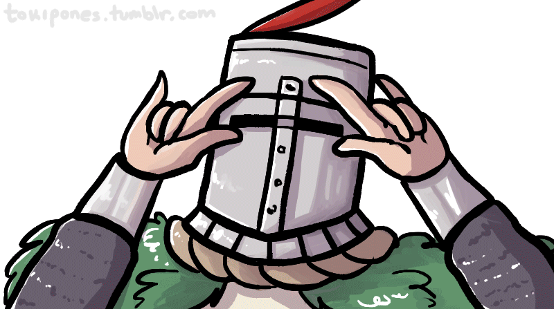

Dark Souls III recebeu aclamação por parte da critica especializada. Os elogios focarem-se sobretudo nos visuais e nas mecânicas de combate, fazendo lembrar o ritmo rápido de Bloodborne, o jogo anterior da FromSoftware. No site de análises agregadas Metacritic a versão Microsoft Windows conseguiu a pontuação de 90/100, o que indica “aclamação universal”.
para voltar a página home
